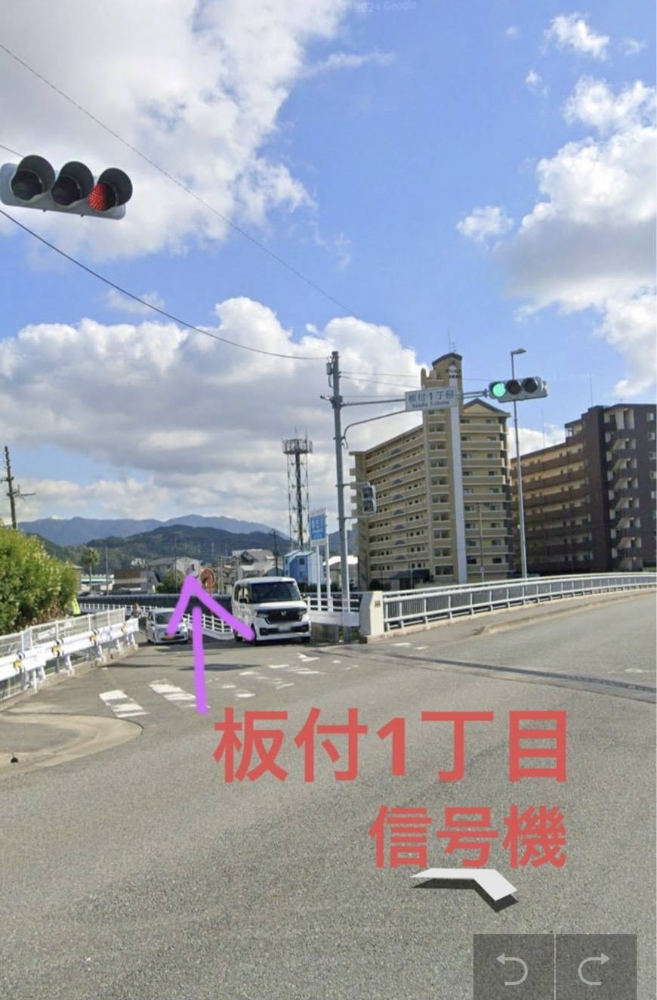
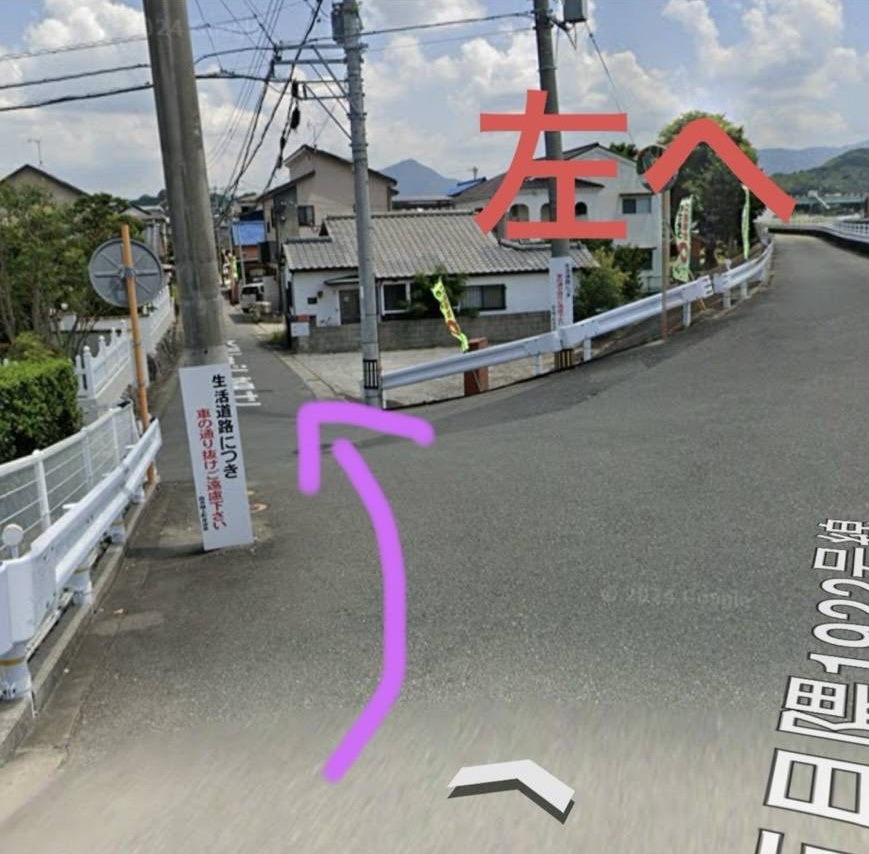
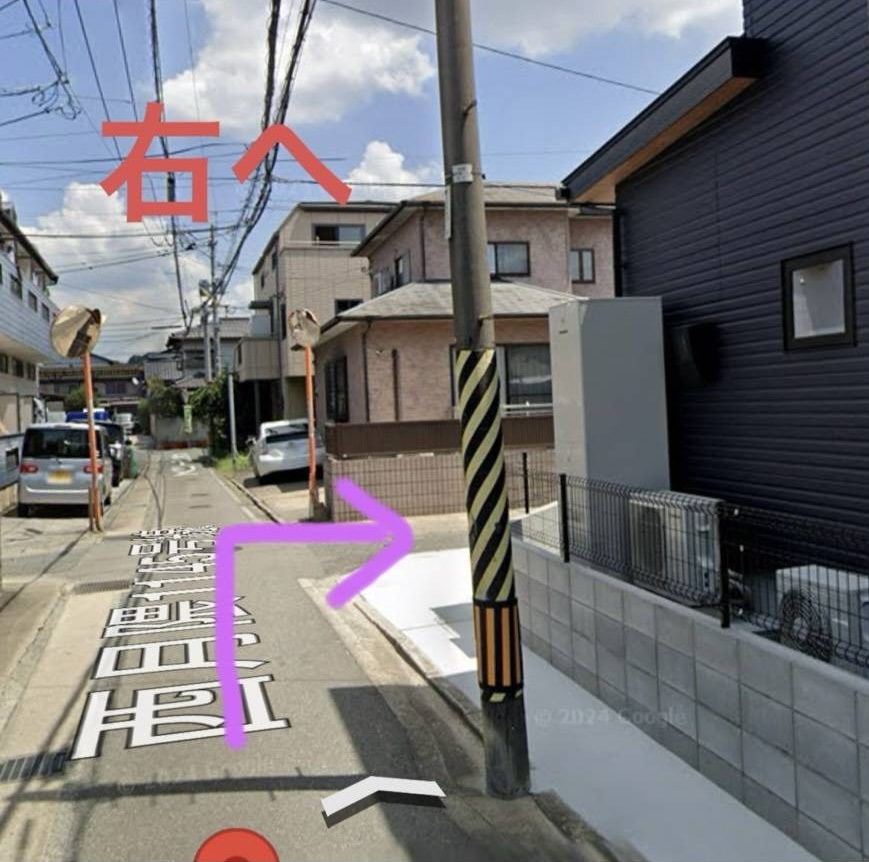

📍
店舗情報
🏠 店舗概要
サロン名
totte住所
〒812-0857福岡県福岡市博多区西月隈3丁目22-19
🕐 営業時間
営業時間
10:00〜17:00定休日
日曜🚗 アクセス
🚃
JR鹿児島本線の笹原駅
徒歩約19分
🚌
Googleマップで開く ↗
「西月隈三丁目」バス停
徒歩約1〜2分
📍 店舗までの経路
初めてお越しの方は、下記の道順をご確認ください。
01
板付1丁目の信号機を目印に進みます。

02
橋を渡った先を左方向へ進みます。

03
そのまま進み、右へ曲がります。

🎥 店舗までの経路〜動画〜
🅿️ 駐車場
駐車場あり2台可
💬 お問い合わせ
ご予約・ご相談は
LINEトークより
お気軽にお問い合わせください。